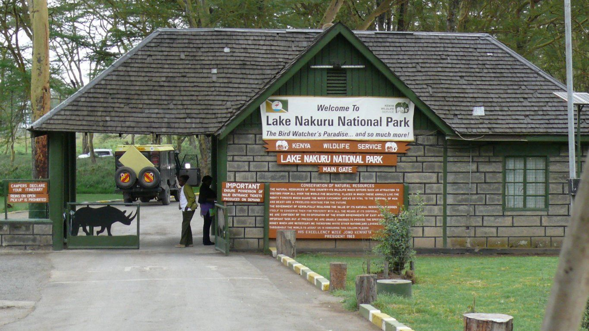

Lake Nakuru National Park is one of the best national parks in Kenya given that it has one of the Rift Valley soda Lakes i.e. Lake Nakuru. The park has 3 main gates and once you get into the park you will enjoy a wide variety of wildlife species and especially the Flamingoes which make the lake lool pink.
Nakuru National Park, the park most famous for the colonies of flamingoes that live on the shores of the park’s Lake Nakuru. Lake Nakuru park Kenya is a premium game park, one of only three in the country and one of the most visited game parks in Kenya.
Lake Nakuru Park is known as bird lover’s hub because of the numerous birds that make home in this park. Lake Nakuru kenya Park is home to over 400 bird species including the flamingos that live on the lake and in the park’s savannah grasslands. The bird species include but not limited to African Fish Eagle, Slender-billed greenbul, Long-tailed widowbird, Rufous-throated wryneck, Montane white-eye,Red-capped lark, Northern puffback, Rüppell’s robin-chat, Shining sunbird and many more
Nakuru National Park though famous for the numerous birds, it’s also a wild game destination for animal lovers and wildlife explorers. Lake Nakuru park is a habitat to over 100 endangered Rhinos distributed between the black and white rhinos the park is also home to the endangered Rothschild’s giraffe and other 50 or more animal species that include buffalos, waterbucks, lions, impalas and many more.
Lake Nakuru National Park over the years has grown to become one of the most visited parks in Kenya by travelers annually because of the birds and other great features in the park. Travelers that visit Lake Nakuru Park get to indulge in activities such as bird watching, game viewing, camping and picnicking on the beautiful rocky view points in the park and many more activities.
Nakuru Kenya National Park was first declared a conservation area for the birds that were Lake Nakuru including the flamingos in 1957 and the conserved area only included Lake Nakuru and small parts of the surrounding areas. This was done to preserve the lake, reduce on the pollution of the lake and conserve the bird life that was blooming on Lake Nakuru.
In 1961 the already declared conversed area which is the current southern section of Nakuru National Park was declared a bird sanctuary and different protocols introduced to ensure bird protection in the that area were put in place.
In 1968 Lake Nakuru National Park, was gazetted as one of Kenya’s National parks. This was after the park area was expanded to include the northern savannah lands of the park which saw the park’s total area grow to 188km2. Also several mammals were introduced to the park, to diversify the park from just a bird sanctuary to also an animal park.
Lake Nakuru National Park was given the honours of being home to the very rare and endangered Rothschild giraffes in 1977 when the giraffes were brought to Lake Nakuru National park from western Kenya for conservation and protection. This initiative by the Kenyan government was a boast to its efforts of preserving wildlife in the East African country.
After the rothschild’s giraffes, rhinos were also introduced in Lake Nakuru Kenya Park in the 1980s; in a Kenyan government initiative to conserve the endangered rhinos that were drastically declining in number. This was the first of its kind in Kenya and in 1984, Lake Nakuru park was designated the first government protected rhino sanctuary in Kenya.
To further protect the rhinos from poachers, the Kenyan government erected a 188km2 electric fence around Nakuru National Park in 1986. This fence was and still serves the purpose of keeping poachers away from the Lake Nakuru park as well as keeping the rhinos within the bounds of the park. After the successful construction of the 188km2 electric fence and the Kenyan government officially declared Lake Nakuru Park a rhino sanctuary in 1987.
Lake Nakuru National Park is a UNESCO World heritage site and it’s internationally recognised as an IBA since 2009 for the over 400 bird species living in the park; in 1990 Lake Nakuru was declared a RAMSAR site.
From the history of the park, Lake Nakuru Park evolved, grown and developed greatly over the years in so many ways which makes it a perfect destination for a safari not to just experience the developed of the park but most all to experience the bird life, wildlife and the extraordinary beauty of the this unique park is central Kenya Nakuru town
From the history of the park, Lake Nakuru Park evolved, grown and developed greatly over the years in so many ways which makes it a perfect destination for a safari not to just experience the developed of the park but most all to experience the bird life, wildlife and the extraordinary beauty of the this unique park is central Kenya Nakuru town
Lake Nakuru national park has beautiful scenery with attractions such as Lake Nakuru which the national park is known for, the rift valley escarpment. The landscape of this national park also consists of steep rocky escarpments, dense forests as well as hills which act as viewpoints during game watching experiences at this destination. This national park is also strategically located at a short distance from Nairobi which is the capital city of Kenya. Lake Nakuru park is also found close to Hells gate national park and Naivasha national park which makes it worth visiting. Soysambu Conservancy is also found on the south-eastern boundary of the national park.
Entry gates at this national park include the Nderit gate which is less used for entry, Lanet gate or the main entrance gate which is located not far from Nakuru town. Park entry fees for tourists visiting Lake Nakuru park can be paid according to citizens, residents, and non-residents
Forms of payment for park entry fees at Lake Nakuru park include Mpesa, visa card as well as direct deposits to the Kenya Wildlife Services bank account at any of the gates used to access the national park.
Activities which tourists can engage in during their safaris to this destination include the following;
Game drives are among the ways of experiencing Lake Nakuru national park. These drives provide wildlife viewing experiences close to the wildlife species such as the white rhinos, leopards, lions, giraffes, hippos, impalas, waterbucks among others. These game drives take place at different times of day which provides unique experiences during safaris at this destination.
Bird watchingis another interesting activity that is carried out in Lake Nakuru national park. This is because of the various bird species which can be seen in the different birding spots around the national park.
Hiking is another activity that takes place in Lake Nakuru national park and it takes place as tourists visit the viewpoints around the national park
Lake Nakuru national park also has a number of attractions which include the following;
Lake Nakuru is one of the attractions which this national park is famous for. This is because of the large numbers of flamingos which can be seen along the shores of this lake. The lake is a shallow soda lake that attracts the flamingos to its alkaline shores as they feed on algae.
Many other bird species can also be seen at this lake which makes it a good birding spot and a birders haven to experience both the native and migratory birds.
The types of flamingos which can be seen at this lake are lesser and greater flamingos which flock the lake with their pink color. These flamingos can be seen from viewpoints around the national park such as baboon cliff and Lion hill.
Wildlife species of a variety can also be seen in Lake Nakuru national park despite its smaller size compared to other national parks and reserves around Kenya. The wildlife species which can be seen include waterbucks, white rhinos, black rhinos which can be seen in the woodlands, Rothschild giraffes, leopards, lions, cheetahs among others
Not far from Lake Nakuru is the fenced off sanctuary where some of the wildlife species such as giraffes and rhinos can be seen. The fence around the sanctuary keeps poachers away as well as restricting the movement of the wildlife species.
Bird species which can be seen in Lake Nakuru national park include both the migrant and native bird species such as the greater and lesser flamingos, African fish eagle, goliath heron, hammer kops, pied kingfishers, eagles, white pelicans, Hottentot teals, starlings, black winged lapwings, crab plovers, grey crowned cranes and many others.
Waterfalls in Lake Nakuru national park include Makalia waterfalls which is located in the southern part of the national park is a good spot for hikes as well as picnics for tourists as they explore the beautiful scenery and surroundings at this destination.
Viewpoints within the national park provide good vantage spots to see the different wildlife species as well as other attractions within Lake Nakuru national park. some of the viewpoints include the baboon cliff, Makalia cliff among others.
Lake Nakuru national park can be accessed by different means which include the following;
By road, Lake Nakuru national park can be accessed by driving from Nairobi to the entry gates of the national park such as the main gate which is located near Nakuru town or using the Lanet gate from the Nairobi-Nakuru highway.
By air/ flight,tourists can use Naishi airstrip which is found in the southern part of the national park.
Accommodations around Lake Nakuru national park are categorized into luxury accommodations, midrange accommodations, and budget accommodations as well as camping. The accommodation facilities around this national park include Sarova lion hill lodge, Lake Nakuru Lodge, Lake Nakuru flamingo lodge, Merica hotel, Mbweha camp, Miali saba camp, Mirius guesthouse, Hotel waterbuck Nakuru among others.
lake Nakuru also has a popular lake nakuru lodge where tourists can sit,relax and order their meals while enjoying the scenery.
| price | |
|---|---|
| pizza | 750 |
| ugali fish | 550 |
| rice and chicken | 420 |
Tourists can also opt for camping as an option of accommodation during their safaris and some of the campsites in Lake Nakuru national park include the following; Naishi campsite, Rhino campsite, Soysambu campsite, Kambi nyuki campsite, Makalia campsite among others. Experience the beautiful flamingos as well as a variety of wildlife during a safari to Lake Nakuru national park as you explore its different attractions.
"